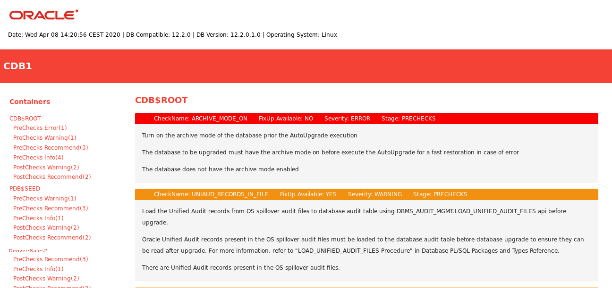

Performing Preupgrade Checks Using AutoUpgrade
The AutoUpgrade Utility is a Java JAR file provided by Oracle that helps to ensure that your upgrade completes successfully.
- About AutoUpgrade Utility System Checks
To help ensure that your upgrade is successful, Oracle strongly recommends that you check your system using the AutoUpgrade Utility in Analyze mode. - Example of Running AutoUpgrade Prechecks Using Analyze Mode
To see how you can use AutoUpgrade to check a non-CDB Oracle Database before an upgrade, use this example to understand the procedure. - Checking the Upgrade Checks Overview File
Learn how to use the AutoUpgrade Upgrade Checks Overview file to prepare for your upgrade. - Creating a Configuration File to Run AutoUpgrade Prechecks On a CDB
See how you can control how AutoUpgrade performs upgrade prechecks to include or exclude PDBs on a multitenant architecture Oracle Database. - Running AutoUpgrade Fixups on the Earlier Release Oracle Database
Use this example to see how to run the AutoUpgrade Fixups that the Analyze mode generates for your system.
Parent topic: Preparing to Upgrade Oracle Database
About AutoUpgrade Utility System Checks
To help ensure that your upgrade is successful, Oracle strongly recommends that you check your system using the AutoUpgrade Utility in Analyze mode.
To use the AutoUpgrade Utility for your upgrade, you must first run AutoUpgrade in Analyze Mode.
Note:
The AutoUpgrade Utility requires Java 8. To ensure that the correct Java
version is available, Oracle recommends that you run AutoUpgrade using the Java
version in the target Oracle Database Oracle home. The path to the Java version in
the Oracle home is Oracle-home/jdk/bin/java, where Oracle-home is the target Oracle Database
Oracle home. To check the Oracle home has Java 8, you can run the following command:
$ORACLE_HOME/jdk/bin/java -version
java version "1.8.0_211"
Java(TM) SE Runtime Environment (build 1.8.0_211-b12)
Java HotSpot(TM) 64-Bit Server VM (build 25.211-b12, mixed mode)AutoUpgrade and the Analyze Mode
The AutoUpgrade Utility includes extensive system checks that can help
to prevent many issues that can arise during an upgrade. The utility is located in
the new Oracle Database binary home. However, to obtain the latest updates, Oracle
strongly recommends that you download the most recent version of the tool from My
Oracle Support Document 2485457.1. You can place the downloaded file in any
directory. To run Analyze to check readiness of the database for upgrade to the new
release while your database is running on your earlier release you must specify the
target version manually in your configuration file, using the
target_version parameter. For example:
upg1.target_version=19.
When you run AutoUpgrade in Analyze mode, AutoUpgrade only reads data from the database, and does not perform any updates to the database. You can run AutoUpgrade using the Analyze mode during normal business hours. You can run AutoUpgrade in Analyze mode on your source Oracle Database home before you have set up your target release Oracle Database home.
Related Topics
Parent topic: Performing Preupgrade Checks Using AutoUpgrade
Example of Running AutoUpgrade Prechecks Using Analyze Mode
To see how you can use AutoUpgrade to check a non-CDB Oracle Database before an upgrade, use this example to understand the procedure.
To use AutoUpgrade, you must have Java 8 installed. Oracle Database
Release 12.1 (12.1.0.2) or newer Oracle homes have a valid java version by default.
Start AutoUpgrade in Analyze mode using the following syntax, where Oracle_home is the Oracle home directory, or
the environment variable set for the Oracle home, and
yourconfig.txt is your configuration file:
java -jar autoupgrade.jar -config yourconfig.txt -mode analyzeWhile AutoUpgrade is running, if you want to obtain an overview of the progress, you
can enter the command lsj on Linux and Unix systems. When all
checks are completed the tool will write the and write the Preupgrade Fixup HTML
File, which provides a report on system readiness, display the status of jobs run to
the screen, and exit. If all jobs are listed as "finished successfully," then it
means that you can go ahead and upgrade the database. However, to see if there are
recommendations that you want to follow before starting the upgrade, Oracle still
recommends that you look at the Preupgrade Fixup HTML File. If any job is listed as
"failed," then it means that there is an error that prevents the upgrade from
starting.
Example 2-4 Using AutoUpgrade in Analyze Mode to Check an Oracle Database 12c Non-CDB System
This example shows running AutoUpgrade using a configuration file for
upgrading from a Non-CDB Oracle Database 12c Release 2 (12.2) system to a new Oracle
Database release, with AutoUpgrade downloaded to the folder
/tmp:
java -jar /tmp/autoupgrade.jar -config 122-to-new.txt -mode analyzeThe configuration file called for this check
(122-to.new.txt) is as follows:
#12.2-to-19c config file
#
global.autoupg_log_dir=/home/oracle/autoupgrade
upg1.source_home=/u01/app.oracle/product/12.2.0.1
upg1.target_home=/u01/app/oracle/product/19
upg1.sid=dbsales
upg1.start_time=now
upg1.log_dir=/home/oracle/autoupgrade/dbsales
upg1.upgrade_node=localhost
Note that the pdbs parameter is not specified. You only
need to specify the pdbs parameter when you want to indicate
specific PDBs that you want to check, and exclude other PDBs on the CDB. The value
you specify for log_dir is the location where AutoUpgrade places
the Preupgrade Fixup HTML File. The file is written using the following format,
where log-path is the path you specify for log files,
sid is the Oracle Database
system identifier, and job-number is
the AutoUpgrade job number:
/log-path/sid/job-number/prechecksWhen you run AutoUpgrade, the output appears as follows:
AutoUpgrade tool launched with default options
+--------------------------------+
| Starting AutoUpgrade execution |
+--------------------------------+
1 databases will be analyzed
Type 'help' to list console commands
upg>
.
.
.
Job 100 completed
------------------- Final Summary -------------------
Number of databases [1]
Jobs finished successfuly [1]
Jobs failed [0]
Jobs pending [0]
------------- JOBS FINISHED SUCCESSFULLY -------------
Job 100 FOR DB12
In this case, the configuration file specifies that you want the log file
placed in the path /home/oracle/autoupgrade. Because the Oracle
Database system identifier (SID) is CDB1, and the AutoUpgrade Job
is 100, the Upgrade Checks Overview file for this job is placed in
the path /home/oracle/autoupgrade/dbsales/100/prechecks.
Review the Upgrade Checks Overview file, and correct any errors that are reported before proceeding with the upgrade. You can run AutoUpgrade in Fixup mode to correct many errors.
With CDBs, you can use the same procedure and the same configuration file.
Note:
When you run AutoUpgrade in Analyze or Fixup mode on a CDB,
AutoUpgrade opens all PDBs in the CDB to complete the action. If a PDB is
closed, then AutoUpgrade opens the PDB, and leaves it in an OPEN state after the
analysis or fixup is completed. If you want to leave PDBs closed, and not
perform checks or fixups, then you can specify that only particular PDBs are
checked or fixed by using the configuration file parameter pdb
to list the PDBs that you want AutoUpgrade to check.
Parent topic: Performing Preupgrade Checks Using AutoUpgrade
Checking the Upgrade Checks Overview File
Learn how to use the AutoUpgrade Upgrade Checks Overview file to prepare for your upgrade.
log_dir parameter.
The file is written using the following format, where
log-path is the path you specify for log files,
sid is the Oracle Database system identifier (SID),
and job-number is the AutoUpgrade job number:
/log-path/sid/job-number/prechecksDB12,
and with the job number
100:/home/oracle/autoupgrade/DB12/DB12/100/prechecksReview the Upgrade Checks Overview file, and correct any errors that are reported before proceeding with the upgrade. You can also run AutoUpgrade in Fixup mode to correct many errors.
Figure 2-1 Example of the Upgrade Checks Overview File

Description of "Figure 2-1 Example of the Upgrade Checks Overview File"
In the topic area of the file the results file example shows two
report messages for CDB$ROOT, which show the name of the
check, whether or not a fixup is available that can be run using AutoUpgrade
in Fixup mode, the severity of the issue, and the stage of AutoUpgrade that
is being run.
Parent topic: Performing Preupgrade Checks Using AutoUpgrade
Creating a Configuration File to Run AutoUpgrade Prechecks On a CDB
See how you can control how AutoUpgrade performs upgrade prechecks to include or exclude PDBs on a multitenant architecture Oracle Database.
To check Oracle Database servers configured with multitenant container databases (CDBs) and pluggable databases (PDBs), you can use the same procedure and configuration file that you use with a non-CDB Oracle Database. As AutoUpgrade runs checks during an Analyze or Fixup mode run, all of the PDBs in the CDB are opened. If you run AutoUpgrade on a CDB, and a PDB is closed, then AutoUpgrade opens the PDB, and AutoUpgrade leaves it open after Analyze checks or Fixup actions.
If you want to manage which PDBs are opened for checks, so that you can
keep some PDBs closed, then you can use the configuration file option
pdbs to provide a list that includes only the PDBs that you
want to be checked. When you provide a list of PDBs to check, AutoUpgrade checks
CDB$ROOT, PDB$SEED, and all of the PDBs that
you specify in the list. In this example, the PDB named
denver-sales2 is specified.
Example 2-5 AutoUpgrade Configuration File for a CDB and PDBs
The following example specifies that only the PDB named
denver-sales2 is opened and analyzed.
global.autoupg_log_dir=/home/oracle/autoupgrade
upg1.source_home=/u01/app/oracle/product/12.2.0
upg1.target_home=/u01/app/oracle/product/19
upg1.sid=CDB1
upg1.start_time=now
upg1.log_dir=/home/oracle/autoupgrade/CDB1
upg1.pdbs=denver-sales2
Parent topic: Performing Preupgrade Checks Using AutoUpgrade
Running AutoUpgrade Fixups on the Earlier Release Oracle Database
Use this example to see how to run the AutoUpgrade Fixups that the Analyze mode generates for your system.
When you run AutoUpgrade in Fixup mode, AutoUpgrade performs the checks that it also performs in Analyze mode. After completing these checks, AutoUpgrade then performs all automated fixups that are required for the new release before you start an upgrade. When you plan to move your database to a new release, using the Fixup mode prepares the database for upgrade.
Caution:
Oracle recommends that you run AutoUpgrade in Analyze mode separately before running AutoUpgrade in Fixup mode. Fixup mode can make changes to the source database.
As part of upgrade preparation, if the source database requires corrections for conditions that would cause errors during an upgrade, then AutoUpgrade run in Fixup mode performs automated fixes to the source database. Because running AutoUpgrade in Fixup mode is a step that you perform as you are moving to another system, it does not create a guaranteed restore point. Oracle recommends that you run this mode outside of normal business hours.
If Java 8 is in your source Oracle home, then start AutoUpgrade in Fixup
mode using the following syntax, where Oracle_home is the Oracle home directory, or the
environment variable set for the Oracle home, and yourconfig.txt is
your configuration file:
$ java -jar autoupgrade.jar -config yourconfig.txt -mode fixupParent topic: Performing Preupgrade Checks Using AutoUpgrade